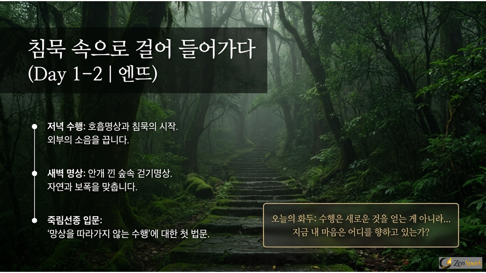
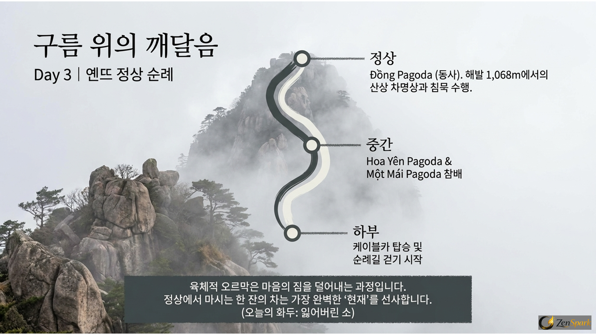
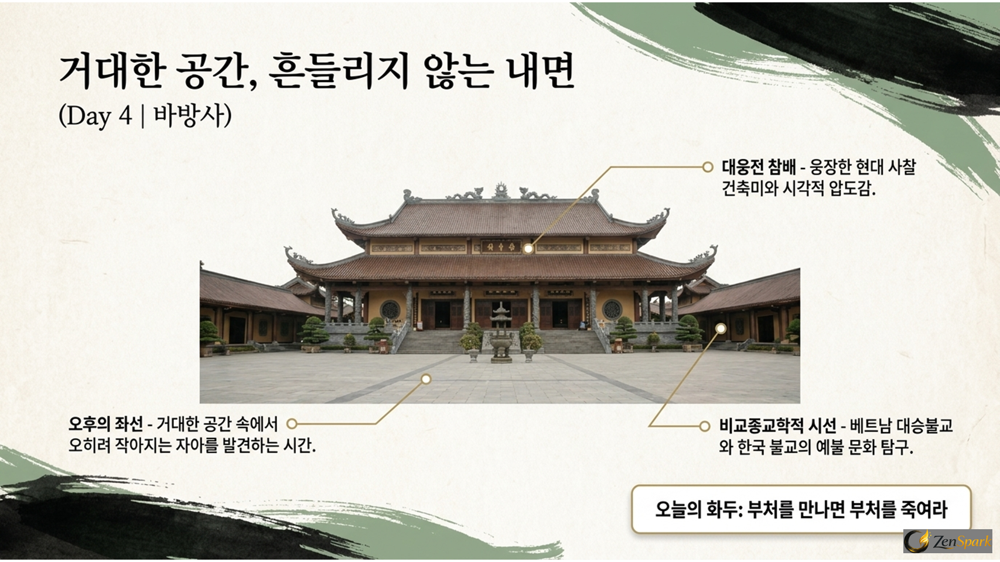
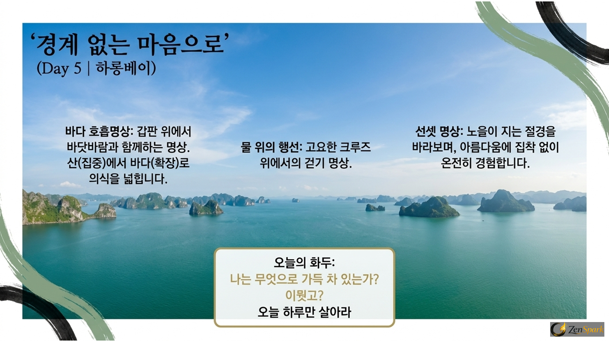
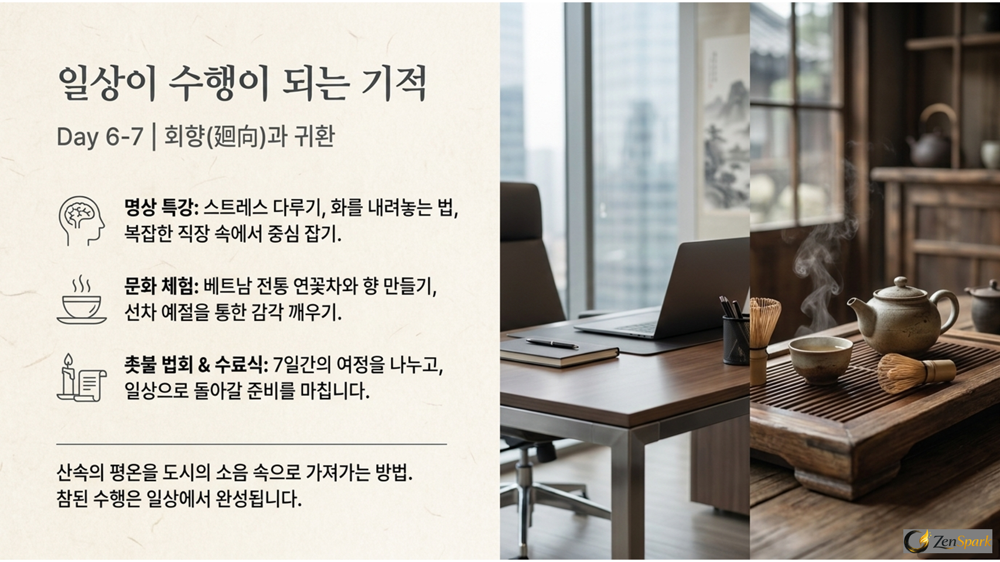
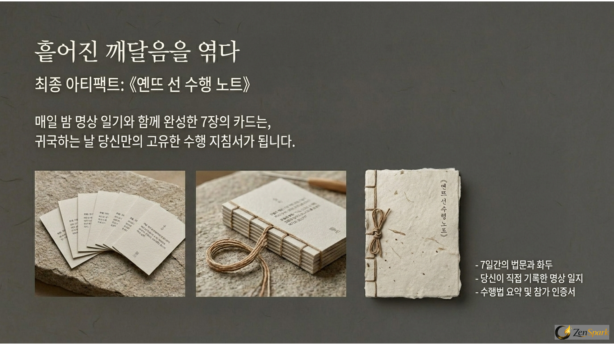
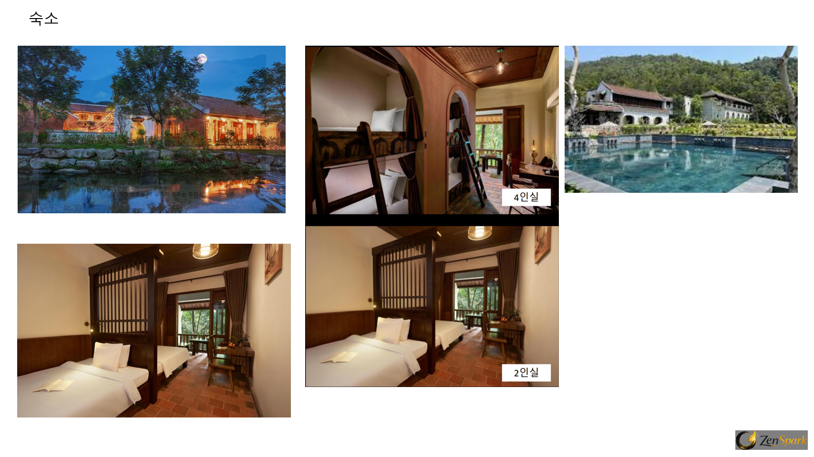
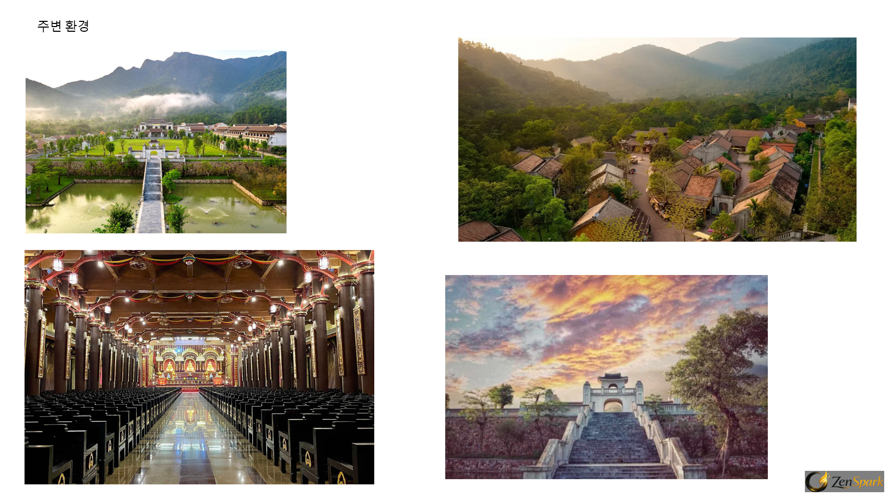
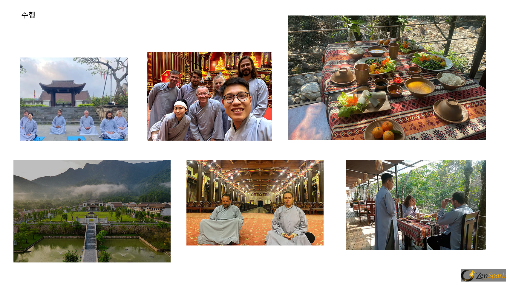
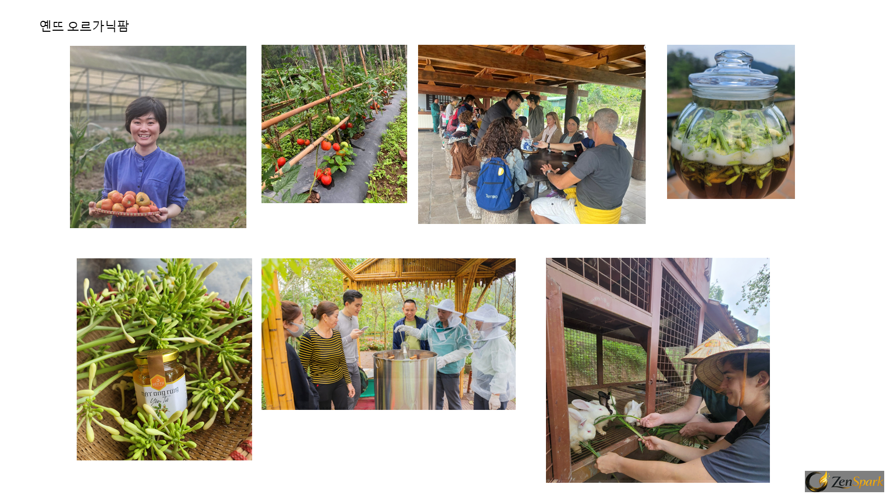

가득 찬 잔에는 아무것도 담을 수 없습니다. 오늘, 무엇을 비울 것인가?
일상의 스트레스와 복잡한 생각으로 가득 찬 마음을 안고 출발합니다.
이 여정의 첫 번째 단계는 새로운 것을 채우는 것이 아니라, 오직 비워내는 것입니다.
이 여정은 베트남 선불교의 발상지를 직접 걸으며, 우리에게 익숙한 한국 간화선의 본질을 함께 비춰보는 입체적인 수행의 시간입니다.
| 항목 | 베트남 죽림선종 (Trúc Lâm) | 한국 간화선 (조계종 전통) |
|---|---|---|
| 핵심 | 망상을 알아차리고 따라가지 않음 | 화두 하나를 끝까지 의심함 |
| 수행 대상 | 일어나는 모든 생각 | 하나의 화두 |
| 방법 | 관찰과 놓아버림 (하늘의 구름을 보듯) | 화두에 몰입 (태양 하나만 보듯) |
| 목표 | 본래 마음을 드러냄 | 깨달음 (견성) |
| 대표 표현 | "망상을 따라가지 말라." | "이뭣고?" "무(無)!" |
길은 다르지만, 분별을 내려놓고 본래 마음을 찾는다는 도착지는 같습니다.
숲에서 시작해 산 정상을 거쳐 넓은 바다로 이어지는 7일간의 심리적 고도 변화.

오늘의 화두 — "수행은 새로운 것을 얻는 게 아니라… 지금 내 마음은 어디를 향하고 있는가?"

육체적 오르막은 마음의 짐을 덜어내는 과정입니다. 정상에서 마시는 한 잔의 차는 가장 완벽한 '현재'를 선사합니다. (오늘의 화두: 잃어버린 소)

오늘의 화두 — "부처를 만나면 부처를 죽여라"

오늘의 화두 — "나는 무엇으로 가득 차 있는가? 이뭣고? 오늘 하루만 살아라"

산속의 평온을 도시의 소음 속으로 가져가는 방법. 참된 수행은 일상에서 완성됩니다.
도착과 함께 제공되며, 여정을 마친 후에는 당신만의 일상 수행 지침서가 됩니다.
매일 밤 명상 일기와 함께 완성한 7장의 카드는, 귀국하는 날 당신만의 고유한 수행 지침서가 됩니다.

죽림선원 인근의 숙소와 자연, 함께한 이들의 수행 순간들.



